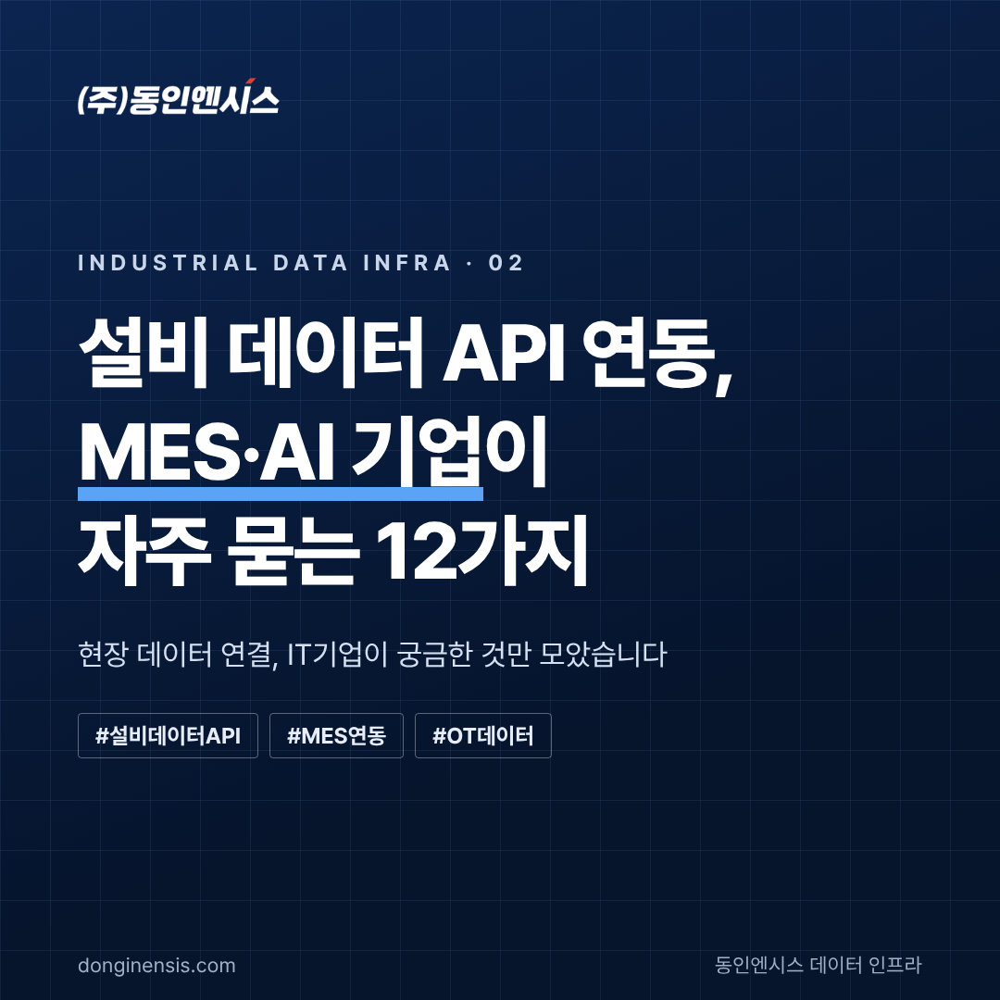
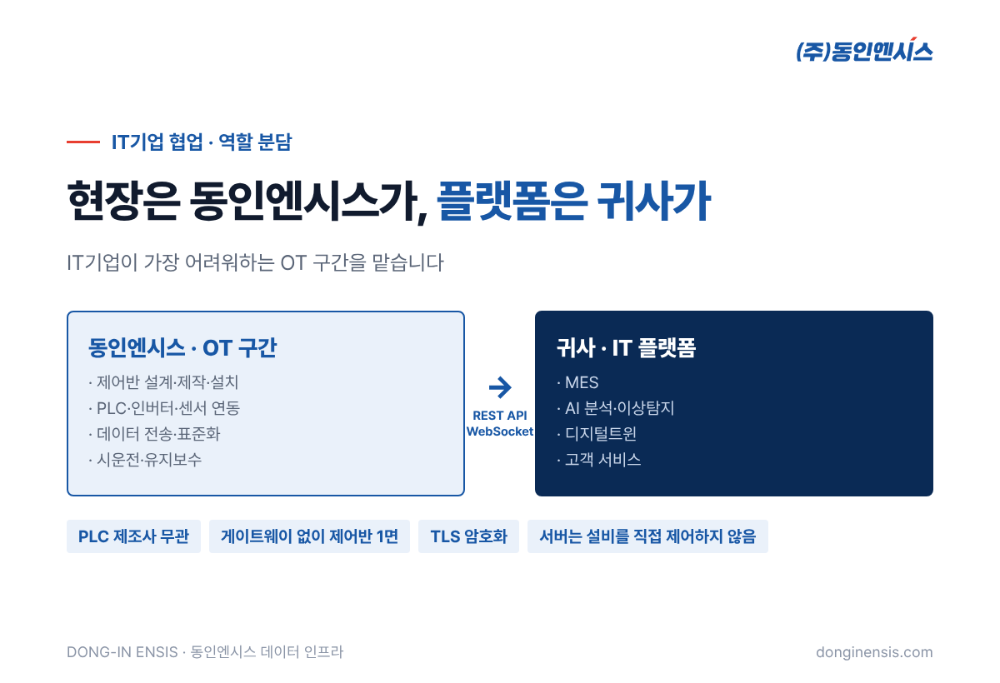
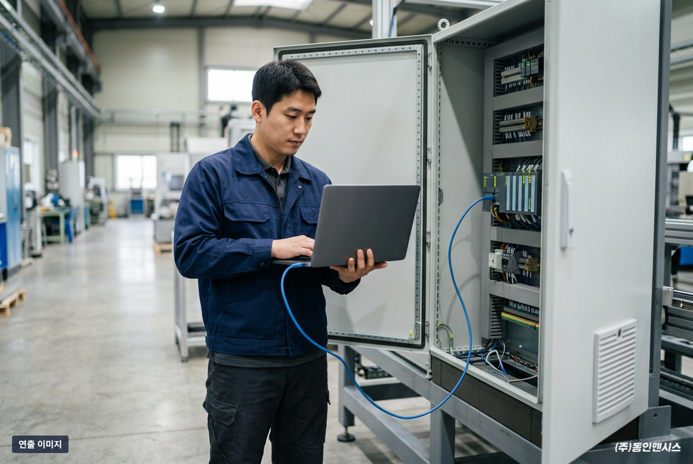
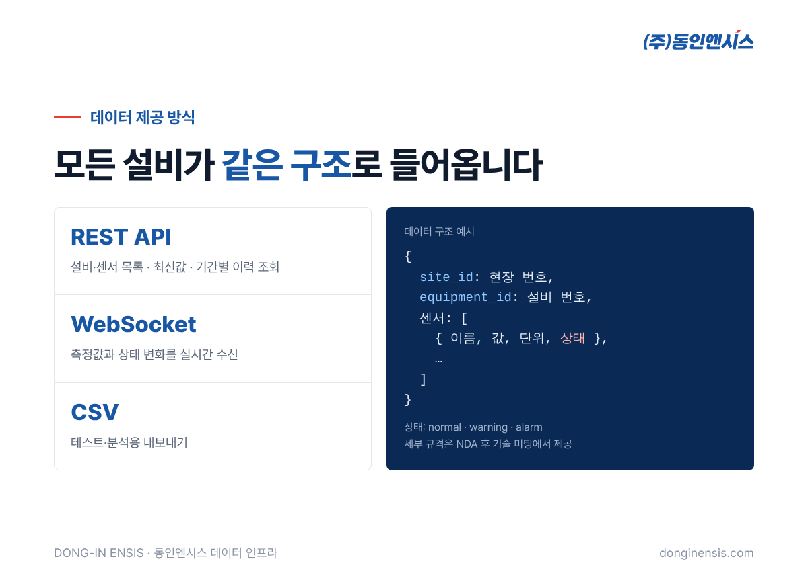
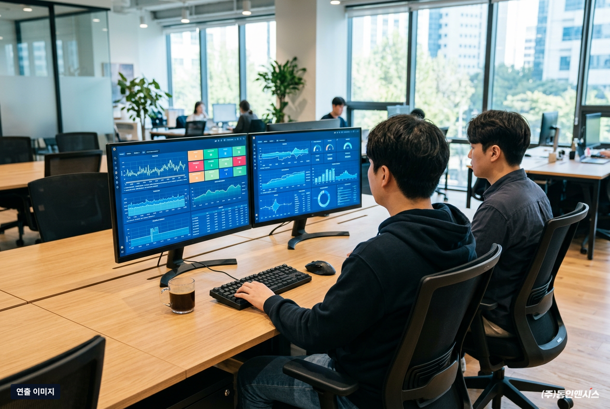
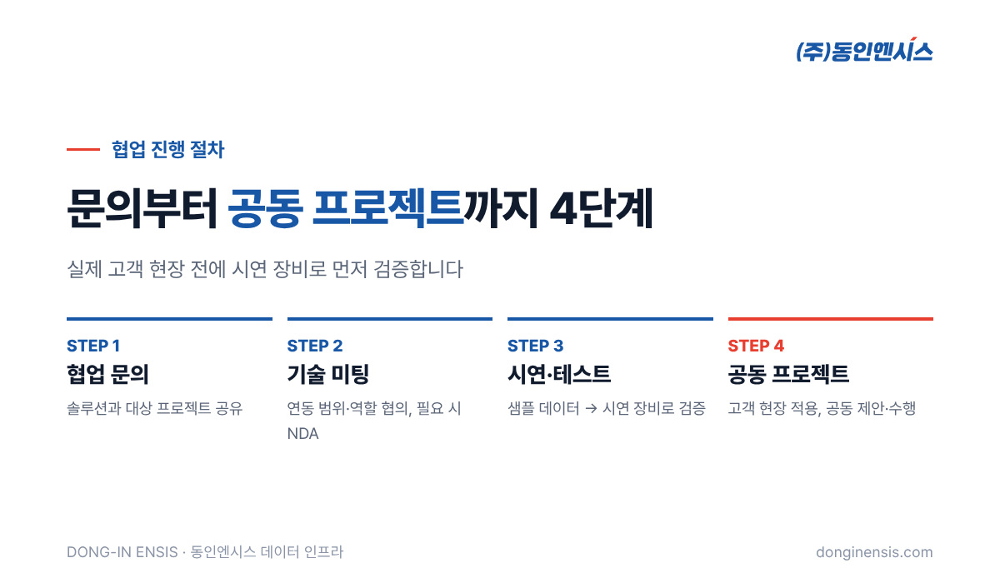

MES, AI 분석, 디지털트윈 솔루션을 만드는 IT기업이라면 한 번쯤 겪어 보셨을 겁니다. 소프트웨어는 준비됐는데, 정작 공장 설비에서 데이터를 받아 오는 단계에서 프로젝트가 몇 달씩 멈추는 일 말입니다. 이 글은 설비 데이터 API 연동을 검토하는 IT기업 담당자분들이 지능형 제어반 제조사 동인엔시스에 실제로 자주 묻는 질문 12가지를 모아 답한 글입니다. 연결 방식, 데이터 형식, 보안, 협업 방법 순서로 정리했습니다.
스마트팩토리 프로젝트에서 IT기업이 가장 자신 있는 부분은 플랫폼과 화면, 분석 로직입니다. 반대로 가장 부담스러운 부분은 현장입니다. 공장마다 PLC 제조사와 기종이 다르고, 통신 방식도 제각각입니다. 데이터를 뽑기 위해 수집 장비를 따로 달면 그 장비를 계속 관리해야 하고, 문제가 생길 때마다 현장에 사람을 보내야 합니다.
결국 데이터 연결이라는 첫 단계에서 일정과 비용이 불어납니다. 아래 질문들은 이 구간을 어떻게 줄일 수 있는지에 대한 답입니다.

Q1. 현장마다 PLC 제조사가 다른데, 전부 연결할 수 있나요? 특정 제조사로 한정하지 않습니다. 새로 설치하는 설비는 MQTT를 지원하는 PLC로 지능형 제어반을 구성해, 별도 장비 없이 데이터를 바로 보냅니다. 이미 미쓰비시, LS, 지멘스 같은 다른 회사 PLC가 있는 현장은 기존 PLC의 데이터를 읽기만 합니다. 이때 OPC UA를 먼저 검토하고, 안 되면 Modbus TCP, 그다음 제조사 전용 통신(게이트웨이) 순서로 현장에 맞는 방법을 정합니다.
Q2. 데이터 수집용 게이트웨이를 따로 설치해야 하나요? 신규 설비라면 필요 없습니다. 지능형 제어반이 설비를 제어하면서 데이터도 함께 보내기 때문에, 현장에는 제어반 1면만 들어갑니다. 관리할 장비가 하나 줄어드는 셈입니다.

Q3. 어떤 데이터를 받을 수 있나요? 모터 권선온도(U·V·W상), 베어링 온도, 회전속도, 전압·전류·전력량, 진동, 대기 온습도, 운전 상태신호입니다. 현장 설비와 목적에 따라 수집 항목은 조정할 수 있습니다.
AI 이상탐지를 만든다면 온도와 진동, 전류 데이터가 특히 쓸모가 많습니다. 에너지 관리 서비스라면 전력량이 중심이 되고, 가동률 분석이라면 운전 상태신호가 기본이 됩니다. 어떤 서비스를 만들지 알려 주시면 거기에 맞는 항목부터 제안해 드립니다.
Q4. 데이터는 어떤 구조로 오나요? 설비마다 현장 번호(site_id)와 설비 번호(equipment_id)가 붙고, 그 아래 센서마다 값·단위·상태가 같은 형식으로 들어갑니다. 상태는 센서별 기준값에 따라 정상(normal)·경고(warning)·알람(alarm)으로 나뉘고, 센서 하나라도 경고면 그 설비 전체가 경고로 표시됩니다. 모든 설비가 같은 구조이기 때문에, 설비가 늘어나도 연동 코드를 새로 짤 필요가 없습니다.
Q5. 설비 데이터 API는 어떤 방식으로 제공되나요? 세 가지를 제공합니다. REST API로는 설비·센서 목록, 최신값, 기간별 이력을 조회할 수 있습니다. WebSocket으로는 측정값과 상태 변화를 실시간으로 받습니다. 테스트나 분석용으로는 CSV 내보내기도 됩니다. 엔드포인트와 인증 방식, 갱신 주기는 기술 미팅에서 함께 정합니다.

Q6. 현장 통신이 끊기면 그 사이 데이터는 빠지나요? 빠지지 않도록 설계했습니다. 통신이 끊긴 동안의 측정값은 제어반에 보관했다가, 연결이 돌아오면 오래된 순서대로 다시 보냅니다. 측정 시각은 현장에서 기록하고 순번을 붙이기 때문에, 받는 쪽 서버에서 중복이나 누락을 가려낼 수 있습니다.
Q7. 저희 서버가 설비를 직접 제어하게 되나요? 아닙니다. 안전 인터록과 최종 제어 권한은 언제나 현장 PLC에 있습니다. 서버는 데이터를 받을 뿐 설비를 움직이지 않고, 제어망과 데이터망도 나눠 둡니다. 현장과 서버 사이 MQTT 통신은 TLS로 암호화하고, 원격 접속은 고객이 승인한 VPN으로만 합니다. 제어반마다 PLC 모델과 버전, 인증서 만료일도 대장으로 관리합니다.
Q8. 고객사가 보안 정책상 외부 클라우드를 못 쓴다면요? 데이터허브와 대시보드를 고객사 서버나 사내망에 두는 온프레미스 방식으로 구축할 수 있습니다. 이 경우 외부와 연결하지 않고도 운영됩니다. 반대로 인터넷이 들어오지 않는 현장은 LTE 통신 장비를 함께 구성하는 방법이 있습니다.
Q9. 본격적으로 시작하기 전에 연동을 시험해 볼 수 있나요? 네. 먼저 샘플 데이터로 구조를 확인하고, 그다음 시연 장비로 실제 연동을 검증하는 순서로 진행합니다. 실제 고객 현장에 들어가기 전에 귀사 플랫폼과 맞는지 미리 확인할 수 있습니다.
Q10. 역할은 어디까지 나누나요? 현장 쪽은 동인엔시스가 맡습니다. 제어반 설계·제작·설치, PLC와 인버터·센서 연동, 데이터 전송과 표준화, 시운전과 유지보수까지입니다. 귀사는 MES, AI, 디지털트윈 같은 플랫폼과 고객 서비스에 집중하시면 됩니다.
Q11. 모은 데이터의 소유권은 어떻게 되나요? 프로젝트마다 계약으로 정합니다. 각자의 역할, 데이터를 누가 소유하고 어디까지 쓸 수 있는지, 얼마나 보관하는지를 계약서에 담습니다.
Q12. 현장 하나를 구축하는 데 얼마나 걸리고, 영업도 함께할 수 있나요? 표준 구축 기간은 현장 분석부터 시운전까지 9~15주이며, 현장 조건에 따라 달라질 수 있습니다. 제조 고객을 함께 발굴하거나, 정부 지원사업에 공동으로 참여하는 것도 가능합니다. 시연 장비를 들고 함께 제안하러 가기도 합니다.

처음 이야기를 나눌 때 아래 네 가지를 알려 주시면 기술 미팅이 훨씬 빨라집니다.
모든 답이 정해져 있지 않아도 괜찮습니다. 정해지지 않은 부분은 현장 분석을 하면서 함께 정하면 됩니다.

좋은 플랫폼일수록 믿을 수 있는 현장 데이터가 필요합니다. 부산에 본사를 둔 동인엔시스는 조선소와 수소충전소, 해외 생산라인까지 제어반을 설계·제작해 온 회사로, 이제 그 경험을 설비 데이터 API로 이어 IT기업이 가장 어려워하는 OT 구간을 맡고 있습니다. 슈나이더 일렉트릭 공식 SI 파트너로서 쌓은 제어 기술도 이 바탕이 됩니다.
현장 설비 데이터 연동이 필요한 프로젝트가 있다면, 홈페이지의 IT기업 협업 페이지에서 편하게 문의해 주세요.
전화 051-862-3668 · 이메일 dongin@donginmne.com
아래 질문 중 하나에 실제 경험으로 답해 본문 적당한 곳에 넣어 주세요. 사람이 직접 쓴 문장이 들어가면 네이버에서 저품질 위험이 줄고 노출에 도움이 됩니다.